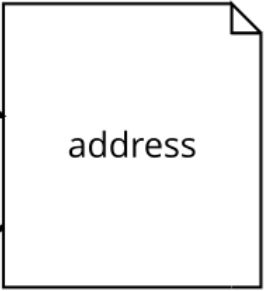
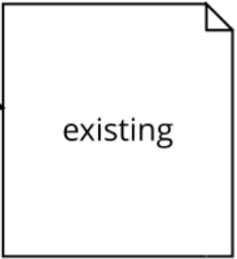

The dataflow modeling aspect of BPMN is depicted on the
left.
BPMN uses two different modeling elements for basic
dataflow modeling.
A database symbol describes that data is saved in an external
system, where it might persist beyond the scope of a single instance.
For the purpose of this evaluation we will ignore this
symbol.
A data object symbol that looks like a piece of paper, and describes
basically a variable that is potentially accessible by all tasks in a
process.
If a user wants to model that a task writes data, a dotted arrow
from the task to the data object has to be drawn.
If a user wants to model that a task reads data, a dotted arrow
from the data object to the task has to be drawn.


The process on the left contains two data objects: address and existing.
The task "Collect Data"writes to
address, while the task "Check
Data"readsaddress and
then writesexisting.
The address can be either a text, or a complex data structure like JSON, (for example {
"street": "Bolzmanngasse 3", "town": "Garching"}). It does not
matter.
What matters is that every decision depends on one or many
data objects. In this case the
decision depends on existing, which can be
interpreted from the text.
A BPMN is a static diagram. It is not foreseen that the parts of it are
interactively highlighted to help the user identify coherences.